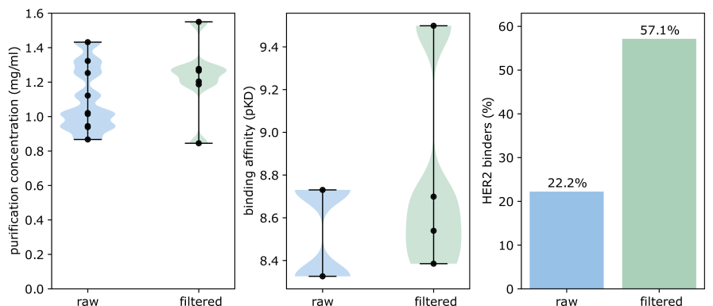

Section Title
This is a section of text content. It provides information and context
about the research and findings. The text should be readable and the
layout should adapt to various screen sizes to ensure a good user
experience on all devices.

Additional textual content here. The image above should be interactively
zoomable for mobile users to explore details without compromising the
readability of the text.
Example of a Math equation: \( E = mc^2 \)
|
|
|
(1)
|